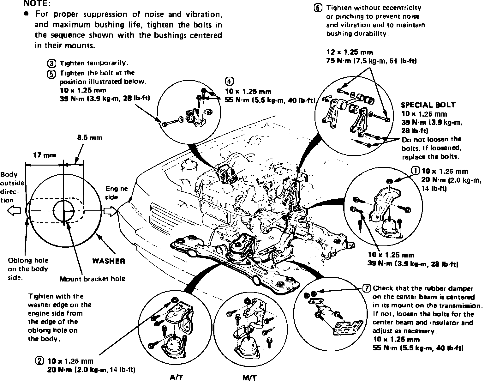

Engine: Service and Repair
1. Remove battery and battery tray.
2. Scribe hood hinge locations and remove hood.
3. Remove air intake tube, air cleaner and resonator tube as an assembly.
4. Remove splash guard from under engine.
5. Drain engine oil, cooling system and transaxle fluid into suitable containers. Install engine oil and transaxle drain plugs using new washers.
6. Disconnect pressure switch electrical connector from oil filter case.
7. Disconnect two water hoses from engine oil cooler.
8. Remove plug and drain oil from oil filter case, then remove the case from engine block.
9. Disconnect upper and lower radiator hoses from radiator.
10. On models equipped with automatic transaxle, disconnect transaxle cooler lines from radiator.
11. On all models, disconnect engine sub-harness connectors from body side.
12. Disconnect electrical connector and hoses from power steering pump.
13. Disconnect cruise control actuator hose.
14. Disconnect vacuum hose from power brake booster.
Fig. 1 Relieving fuel system pressure:

15. Relieve fuel system pressure by loosening the service bolt on top of fuel filter, Fig. 1, one complete revolution.
16. Disconnect fuel lines from fuel filter.
17. Disconnect throttle cable from throttle body, then the rubber tube from control box from connection stay.
18. Remove speed sensor, then unfasten A/C compressor and position aside, leaving refrigerant lines attached.
19. Remove exhaust pipe from front and rear manifolds.
20. On models equipped with automatic transaxle, remove center console assembly, then position shift lever in Reverse and disconnect control wire by removing lock pin.
21. On models equipped with manual transaxle, remove change rod and extension and the clutch release cylinder.
22. On all models, remove ball joint using a suitable tool, then disconnect driveshaft from transaxle.
23. Attach suitable hoist equipment to engine block brackets and raise hoist just enough to remove slack from chain.
24. Remove engine side mount bracket bolts, then the front and rear engine mount nuts and torque rod.
25. Ensure all hoses and wires have been disconnected from engine and transaxle, then carefully lift engine and remove front and rear engine brackets from mount bolts.
26. Tilt engine approximately 30°, then carefully lift and remove engine and transaxle assembly from vehicle.
Fig. 3 Engine mount bolt torque sequence. Legend:

27. Reverse procedure to install, noting the following:
a. Torque engine mount bolts to specifications, in sequence shown in Fig. 3.
b. Install new spring clips on each end of driveshaft and ensure each clip snaps properly into place.
c. Bleed air from cooling system at bleed bolt with heater valve open.